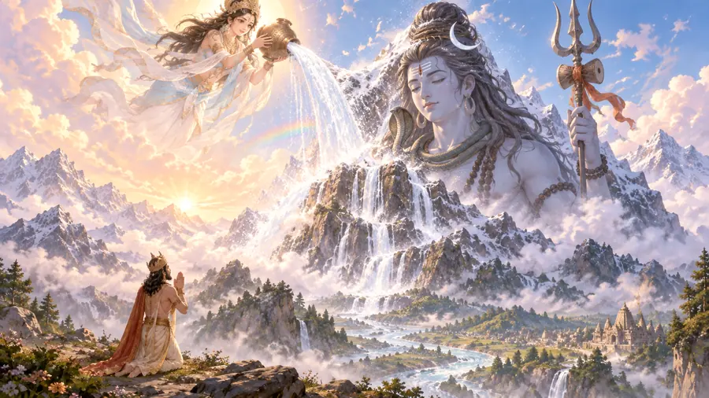

ShivaBala Kanda
Where the river paused
Ganga descends with overwhelming force, and Shiva gives the river a way to reach the earth.
Bhagiratha's purpose was to bring Ganga down so that the ashes of his ancestors could be touched by her waters.